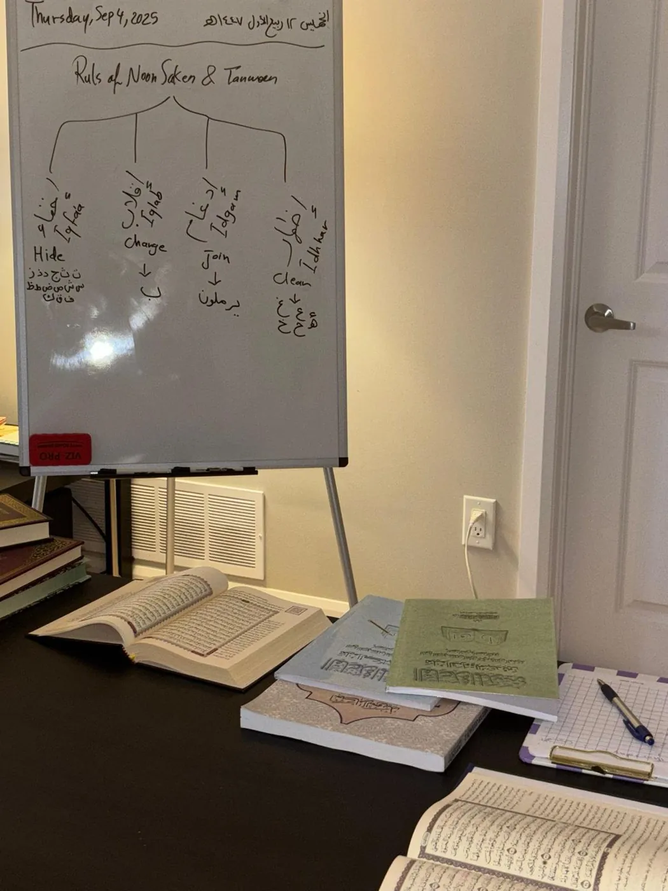

ع
Arabic Language Program
For students who want to read, write, speak, and understand Arabic step by step, with language goals connected to Quran and Islamic learning.
Program detailsPrograms
Arabic, Quran recitation, children’s learning, Islamic Studies, and private support are organized into one clear academy pathway.
For students who want to read, write, speak, and understand Arabic step by step, with language goals connected to Quran and Islamic learning.
Program detailsPronunciation, letter exits, harakat, madd, fluency, and Tajweed foundations taught through guided recitation correction.
Program detailsA gentle children’s program for Arabic letters, short surahs, Islamic manners, repetition, and parent communication.
Program detailsEssential learning in Tawheed, belief, worship, manners, and daily practice taught with clarity and appropriate pacing.
Ask about classesFocused support for students who need flexible scheduling, assessment, recitation correction, or a personalized learning plan.
Request placementSeparate options may be available depending on teacher schedule, level, program demand, and the student’s goals.
Contact usArabic Outcomes
Students build usable Arabic skills that support Quran recitation, Islamic vocabulary, and confidence with learning materials.

Recitation Path
Many learners love the Quran but struggle with pronunciation, similar sounds, vowels, stopping, and fluency. This path turns correction into calm, repeatable progress.
Children’s Program
Children benefit from repetition, encouragement, clear classroom expectations, and lessons that combine Quran, Arabic letters, and Islamic manners.

Placement
Share the student’s age, level, program interest, and availability.
We review reading, recitation, or Arabic needs before recommending a path.
The academy suggests a class or private option based on fit and teacher availability.
Students continue with correction, practice, review, and gradual advancement.